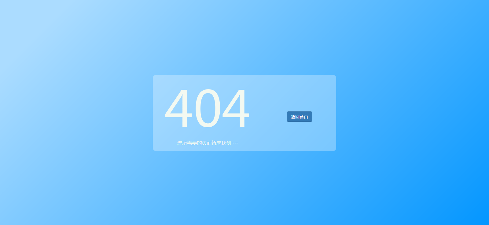

Tomcat 404页面的修改
2018年4月24日
简介
本文主要是讲解，Tomcat的404页面修改以及404页面的要点。因为Tomcat原本的404页面不是很友好所以需要修改一下。
修改404页面配置
1 请转到配置文件 ${TOMCAT_HOME}/conf/web.xml在上面使用以下代码 error-code 代表代码location 代表位置 这个位置是每个应用的位置，经过我的测试，也就是说每个应用内的代码如果出现404则会在这个页面的根目录里面寻找error404.html文件输出
1 | <web-app> |
404页面的特点
404页面的特点很简单，简洁明了，能够表达清楚意思，提供转到响应页面的连接即可。
